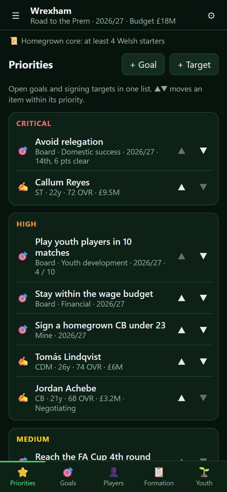
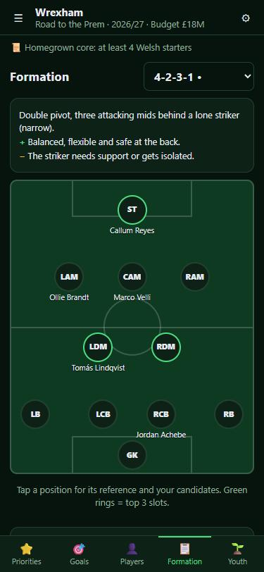
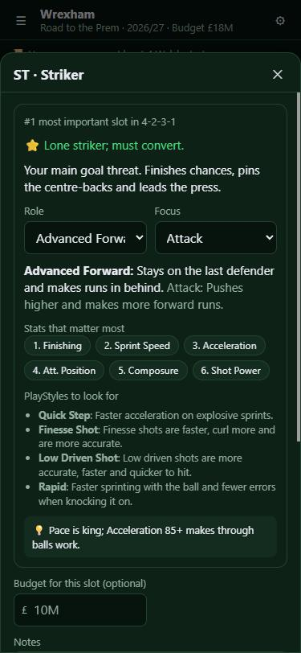
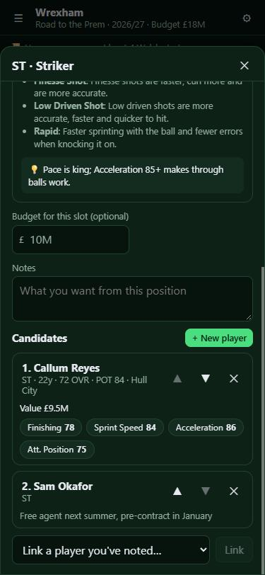
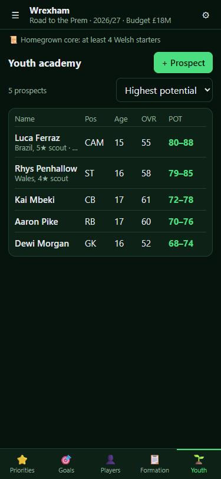

FC 27 Career Helper
Your Manager Career notes, without the paper.
Board objectives, transfer targets, the right players for every slot in your formation, and the youth prospects your scouts find, all on your phone next to the game.
Open FC 27 Career Helper Free. No account. Works offline.Priorities
What matters most, in one list
Your open goals and signing targets line up together, from Critical down to Low, so you always know what to chase next.
- Board objectives and your own goals, by season, with progress
- Signing targets sit next to goals in the same order
- ▲▼ to reorder within a priority
- Separate Goals and Players tabs when you want just one

Formation
Every slot, ranked by importance
Pick any of 31 formations and see it on a pitch, with the slots that carry the shape highlighted and your top candidate under each one.
- Slots listed from most to least important (reorder if you disagree)
- A starting role and focus for every slot, ready to change
- Optional budget per slot, totalled against your transfer budget
- A starting tactic for each formation that you can edit and add instructions to

Inside a slot
What the position wants, and who could fill it
Tap a slot for a quick reference, so you stop searching online mid-window.
- What the position does and why it matters in this formation
- The stats that matter most for the role you picked
- PlayStyles to look for, with what each one does
- Your candidates in order, with their key stats and an over-budget warning


Youth academy
Prospects at a glance
Jot down what your scouts bring back and sort by potential when it's time to decide who to sign.
- Age, current OVR and potential range
- Which scout or region found them
- Sort by potential, OVR, age or newest

Also included
Quick notes welcome
A player only needs a name and position. Everything else is optional.
Several careers
Keep every save apart, each with its own club, season, budgets and challenge rules.
Share with a friend
Copy a one-line share code or download a file. Either one imports on another phone.
Private and offline
Everything stays on your device. Add it to your Home Screen and it works without signal.
Good to know
- Nothing is pulled from the game. You type in what you want to remember.
- The roles and PlayStyles are a guide based on EA's and fan guides' descriptions. Check the game if something looks off.
- EA SPORTS FC is a trademark of Electronic Arts. This is an unofficial fan project.